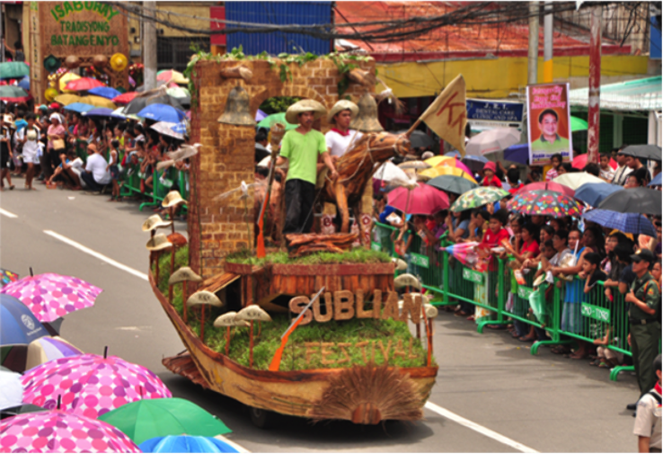
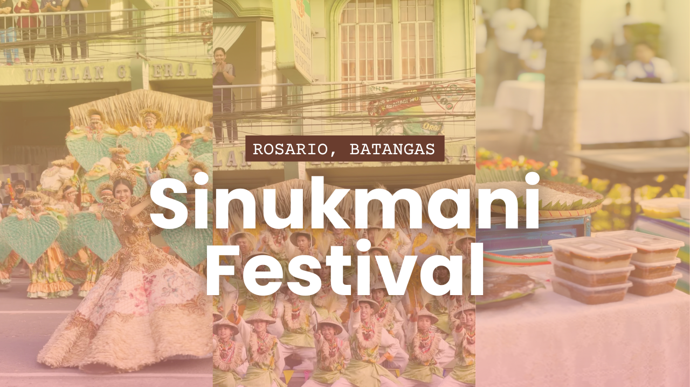

City of Batangas
About
Tourist
History
Festival
Gallery
Welcome to Batangas City Festival
❮


❯
The Sublian Festival is a two-week celebration that ends every year on July 23, honoring the Batangueños' devotion to their patron saints, the Holy Cross in Bauan and Agoncillo, and the Sto. Niño in Batangas City.